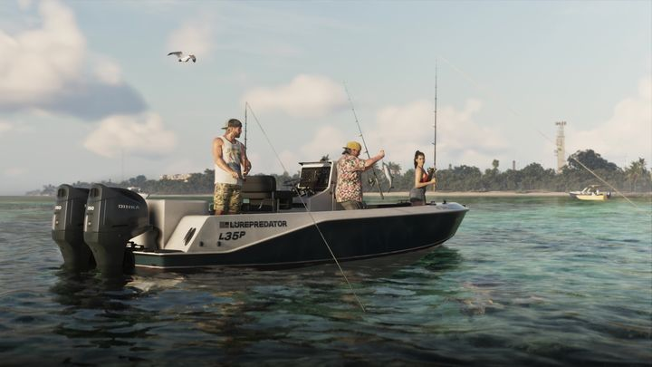
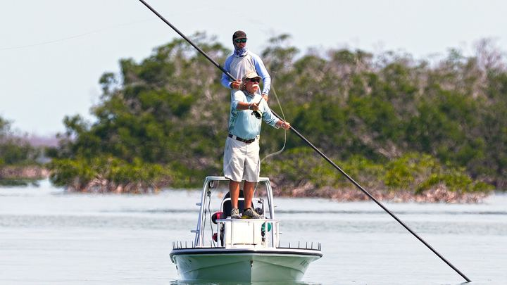
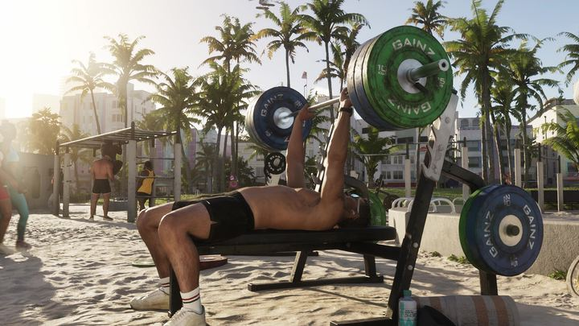
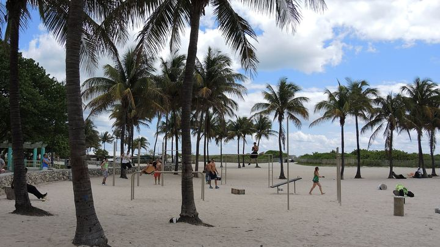

Сравнения (7)
Регион
Вердикт


vsСкопированоРыбалка с катера и спортивная рыбалка ФлоридыКультура · Вся Леонида


vsСкопированоСпортзал на пляже и Lummus Park в Майами-БичКультура · Вайс-Сити

 vs
vsПо мотивамМуралы Вайс-Сити и район Винвуд в МайамиКультура · Вайс-Сити

 vs
vsСкопированоСамолёты с баннерами над пляжами ФлоридыКультура · Вайс-Сити

 vs
vsПо мотивамБайкеры Амброзии и Байк-неделя ДейтоныКультура · Амброзия

 vs
vsСкопированоГрязевая вечеринка и мад-парки ФлоридыКультура · Амброзия

 vs
vsСкопированоОранжевые жилеты охотниковКультура · Mount Kalaga
По этим фильтрам пока ничего нет — сравнения выходят каждый день.